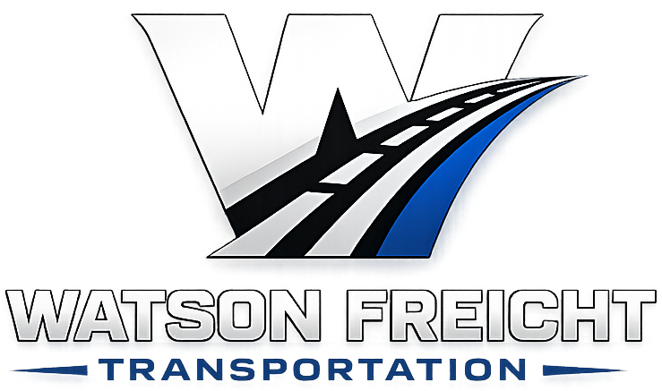
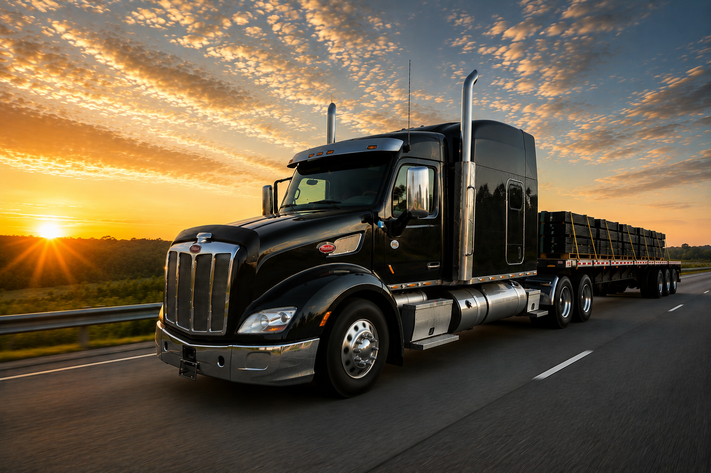

Integrity
We do what we say, communicate honestly, and treat every customer and shipment with respect.

Watson FreightTransportationRequest a QuoteAbout Watson Freight
A Mississippi transportation company committed to safe, dependable service and lasting customer relationships.
Our Story
Watson Freight Transportation was founded in Mississippi with a straightforward purpose: provide dependable freight service while treating people the right way.
We specialize in flatbed and step-deck transportation for building materials, steel, machinery, and specialized freight. Our regional focus allows us to serve customers throughout Mississippi and the Southeast with personal attention and consistent communication.
We understand that a shipment is more than cargo. It can represent a deadline, a jobsite waiting on materials, or a customer counting on a promise. That responsibility guides how we plan, communicate, and deliver every load.

What Guides Us
These values shape every conversation, every mile, and every delivery.
We do what we say, communicate honestly, and treat every customer and shipment with respect.
Careful planning, securement, and professional operation guide every load from pickup to delivery.
Our customers deserve dependable service, clear updates, and freight delivered with confidence.

Our Commitment
From the first call through final delivery, we work to make transportation simple and dependable. Customers receive clear communication, careful load handling, and service backed by real accountability.
Let's Work Together
Tell us about your freight and we’ll help determine the right transportation solution.